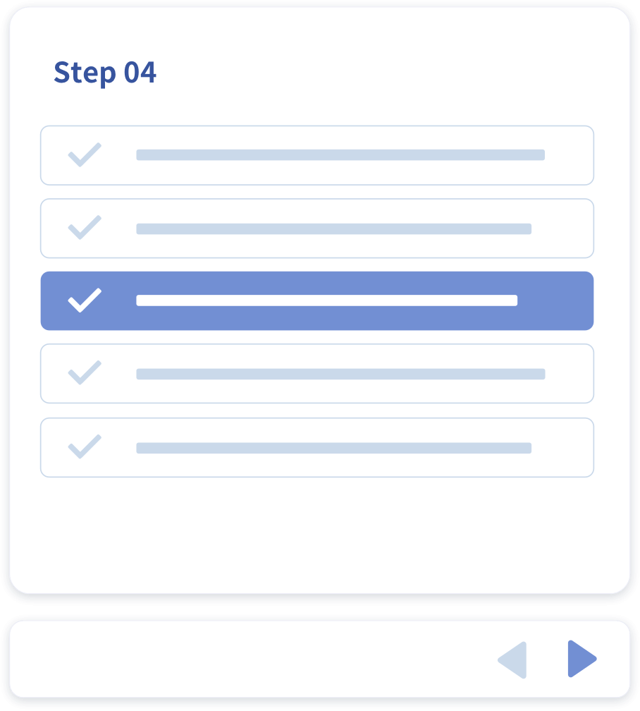
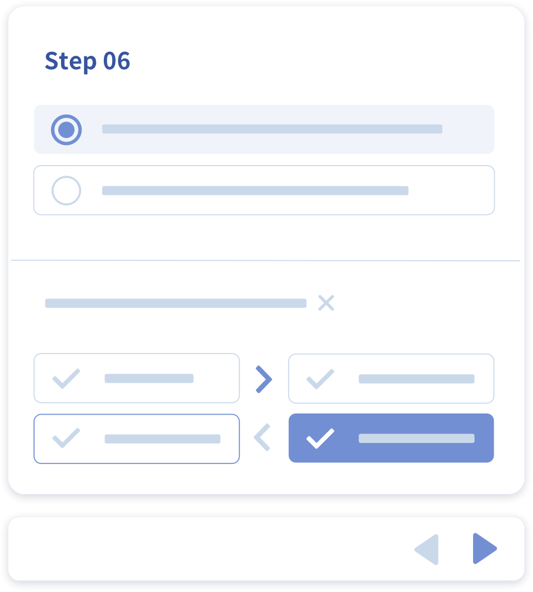
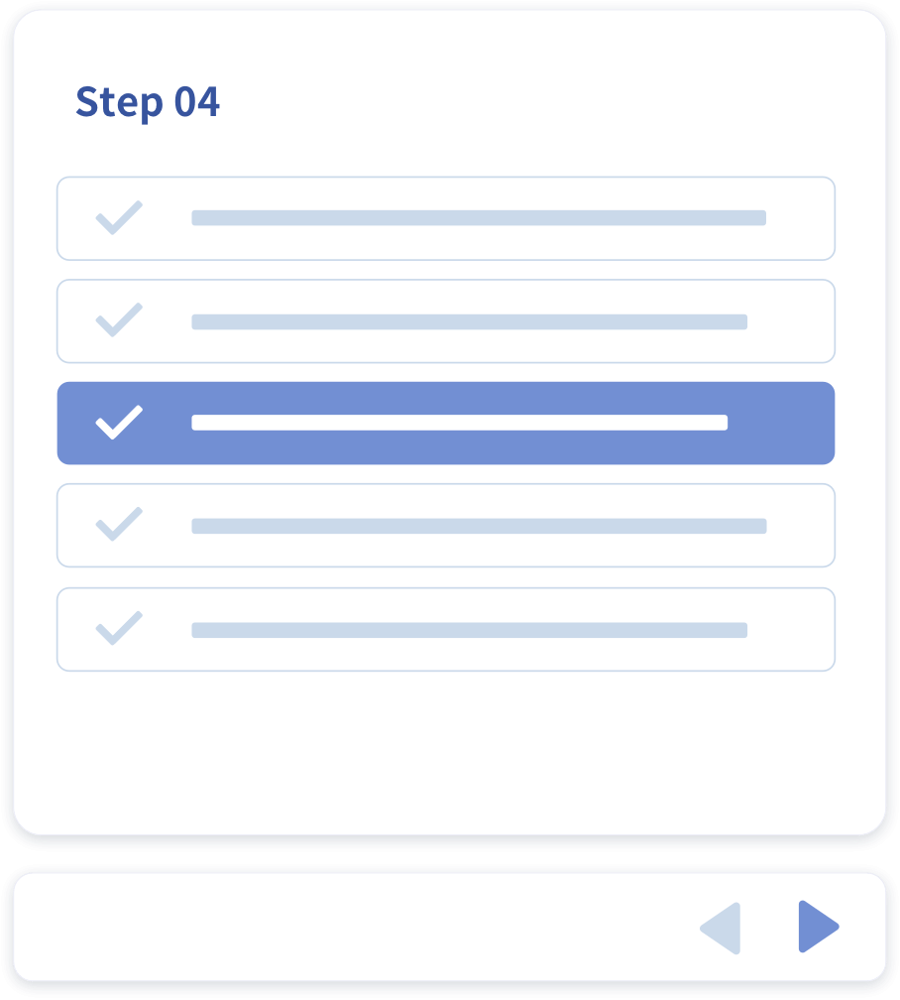
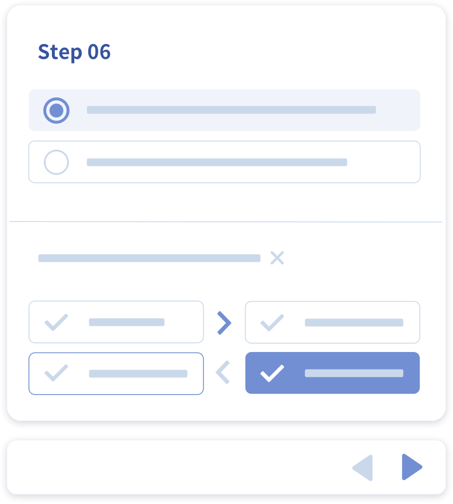

주요기능
설치부터 구성, 세션 클러스터링, 장애 진단 및 대응까지 다양한 기능을 제공합니다
편리한 Wizard 기능
웹 서버와 미들웨어 설정을 동시에 진행할 수 있는 Wizard 기능 제공
- Step 0. hide hide item
- Step 1. 도메인 선택 및 신규 생성
- Step 2. 어플리케이션 서버 선택 및 신규 생성
- Step 3. 웹 서버 선택 및 신규 생성
- Step 4. 세션 서버 선택 및 신규 생성
- Step 5. 데이터소스 배포 및 대상 서버 수정
- Step 6. 애플리케이션 배포 및 대상 서버 수정
- Step 7. Wizard 검토 및 종료

 



- 웹 UI 기반 사용자 친화적 관리 기능
-
- 멀티 서버 관리 및 제어 기능 제공
-
Topology View를 통해 도메인에 구성된 서버, 리소스를 한눈에
파악 가능 - 브라우저의 Light Mode/Dark Mode로 전환 기능 제공
- 실시간 모니터링 대시보드
-
-
직관적인 대시보드 화면을 통해 서버 및 모니터링 주요
정보를 조회할 수 있음 -
자체 에이전트, JMX, 스카우터X(ScouterX) APM을
활용한 실시간 모니터링 시스템 구현 -
운영체제 상태(CPU, 메모리, 디스크, 네트워크 등)에
대한 데이터 수집 및 통계 정보 표시
-
직관적인 대시보드 화면을 통해 서버 및 모니터링 주요
- 장애 선대응 및 추적
-
- 시스템에 최적화된 장애 이벤트 규칙 등록
- IP, Domain 기반의 Rule을 이용한 접근 제어
- 장애 발생 시, 실시간 알림 및 추적/분석 기능
- 장애 원인 분석을 위한 로그 관리 기능
Notification
- 프로비저닝 기능
-
- 엔진 설치 및 환경 구성 가능
-
데이터 소스 및 쓰레드 설정, 드라이버 추가 등
복잡한 기능의 손쉬운 사용 -
Web/Application/Session 서버의 버전 별
설치 기능 및 업그레이드 지원
- 세션 클러스터링을 통한 성능 확장
-
-
Playce Dolly 제품을 통해 대규모 세션
클러스터링 기능 지원 - 세션 메모리 부족 및 GC 문제 해결
- 서버의 안정성 및 고성능 보장
-
Playce Dolly 제품을 통해 대규모 세션
- 작업 이력 및 사용자 권한 관리
-
-
서버 설치 및 제어 등의 작업에 대한 이력 관리,
복원 기능 지원 - 역할별 권한 부여가 가능한 사용자 관리 기능
- 시스템의 버전 관리, 패치 기능 제공
-
서버 설치 및 제어 등의 작업에 대한 이력 관리,